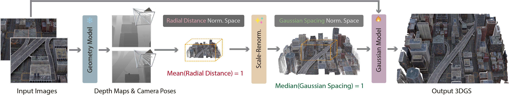
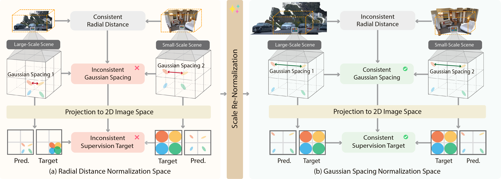

SplatAnything
Gaussian Spacing Normalization for Feed-Forward 3DGS across Arbitrary Scenes
TL;DR
Demo Video
Method

(a) Overall pipeline
Full sizeArchitecture of SplatAnything. Given N input images and optional camera parameters, a frozen geometry foundation model first estimates multi-view geometry. We convert the geometry from its native radial-distance-normalized space to the proposed Gaussian-spacing-normalized space and predict per-pixel Gaussian attribute through a Gaussian backbone and a lightweight GShead.

(b) Normalization space for feed-forward 3DGS
Full sizeRadial Distance Normalization. Fixing the mean radial distance to the reference-camera origin does not align Gaussian spacing. Similar image regions may therefore require different Gaussian-scale targets as scene scale or camera configuration changes, making supervision ambiguous.
Gaussian Spacing Normalization. Canonicalizing the median Gaussian spacing gives predictions a more consistent spatial reference across scenes. This alleviates ambiguity in Gaussian-scale supervision, helping avoid under-coverage and excessive overlap.
Qualitative Results
Click Explore in 3D to download this scene’s HTML viewer from Hugging Face and explore it interactively.
Acknowledgements
Citation